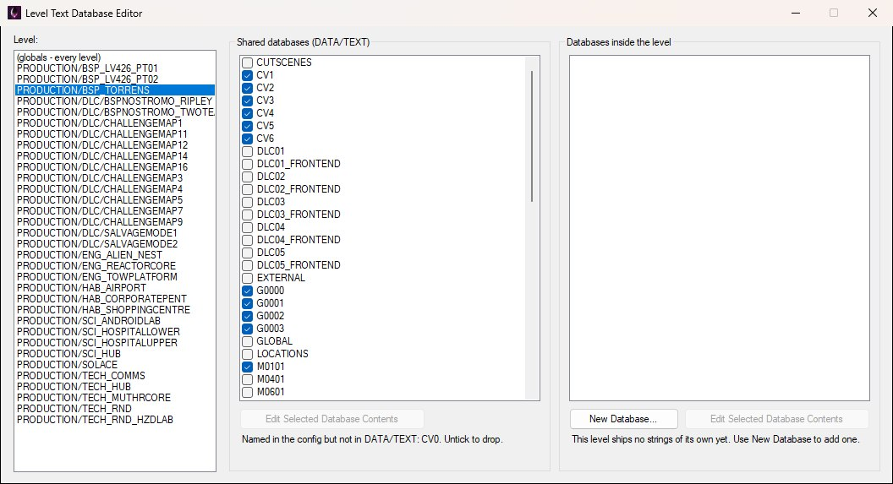
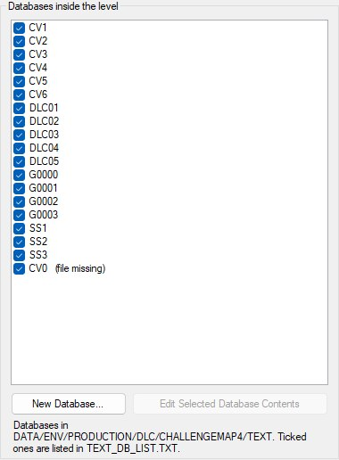
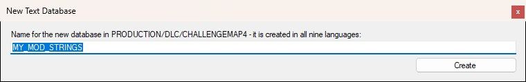
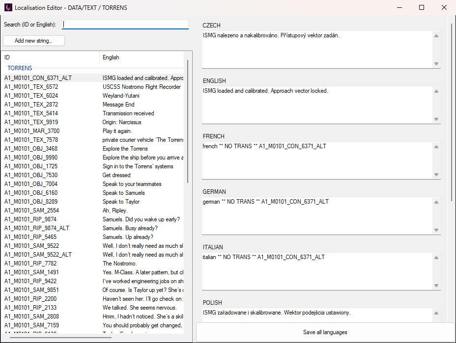

To edit which text databases a level loads in OpenCAGE navigate to View > Configuration Editors > Core Game > Level Text DBs.
A level's script can only display localised strings from the text databases that level loads. Those come from two places, and the level gets the union of both — they add up, they aren't alternatives:
DATA/TEXT, listed per level in DATA/LEVEL_TEXT_DATABASES.XMLTEXT folder and listed in TEXT/TEXT_DB_LIST.TXTPick a level from the Level list on the left to see and change both lists for it: the shared databases sit in the middle, the level's own on the right, as shown below. The top entry, (globals - every level), is the block of shared databases every level loads, whatever level it is; select it and the right-hand group is greyed out, since globals have no level folder. Every tick is saved the moment you make it — there is no Save button.

BSP_Torrens loads its strings from the shared databases; the note under the list flags CV0, which the config names but which does not exist under DATA/TEXT.
The config keys a level by its folder name only, not its path — two levels with the same folder name in different subfolders would share an entry.
Databases inside the level lists the databases in the level's own TEXT folder, with a tick for each one the level actually loads; that list is written to the level's TEXT/TEXT_DB_LIST.TXT. The campaign levels ship no TEXT folder of their own, so for them this group is empty and says so; most of the DLC challenge and salvage maps do, as shown below for ChallengeMap4. A database the list names but the folder no longer holds is kept ticked and marked (file missing), just like the shared list.

ChallengeMap4 ships its own TEXT folder; every database ticked here is named in its TEXT_DB_LIST.TXT.
New Database… creates an empty database inside the level, in every language the game has, and lists it — the quickest way to give a level strings of its own without touching the shared files. It asks only for a name, as below. If that name is already a shared database under DATA/TEXT, OpenCAGE warns first: a database inside the level with the same name replaces the shared one for that level, which is a legitimate way to override a shared bank but rarely what a new database is for.

New Database… only asks for a name; the empty database is written to every language folder and listed for the level straight away.
This editor only decides which databases a level loads. To change the strings inside one, select it in either list and click the Edit Selected Database Contents button beneath that list (it is greyed out until a row is selected), which opens the Localisation Editor on that database in every language, with the folder and database named in its title bar, as below. A row marked (file missing) has no file to open, so the button just tells you so.

Edit Selected Database Contents opens the Localisation Editor on just that database — here the shared TORRENS bank, named in the title bar.